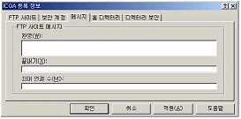

네트워크관리사-2급 (2009-04-26 기출문제)
1과목: TCP/IP
1. TCP와 UDP의 차이점을 설명한 것 중 거리가 먼 것은?
- TCP는 전달된 패킷에 대한 수신측의 인증이 필요하지만 UDP는 필요하지 않다.
- TCP는 대용량의 데이터나 중요한 데이터 전송에 이용이 되지만 UDP는 단순한 메시지 전달에 주로 사용된다.
- UDP는 네트워크가 혼잡하거나 라우팅이 복잡할 경우에는 패킷이 유실될 우려가 있다.
- UDP는 데이터 전송전에 반드시 송수신 간의 세션이 먼저 수립되어야 한다.
(정답률: 76%)

2. 패킷 전송의 최적 경로를 위해 다른 라우터들로부터 정보를 수집하는데, 최대 홉이 15를 넘지 못하는 프로토콜은?
- RIP
- OSPF
- IGP
- EGP
(정답률: 92%)
3. 서브넷 마스크에 대한 설명으로 옳지 않은 것은?
- IP Address 체계에서 Network ID와 Host ID로 구분한다.
- 목적지 호스트가 동일한 네트워크상에 있는지 확인한다.
- Class A는 기본 서브넷 마스크로 255.255.0.0을 이용한다.
- 서브넷 마스크는 Network ID, 필드는 1로, Host ID의 필드는 0으로 채운다.
(정답률: 80%)
4. TCP/IP 계층 중 다른 계층에서 동작하는 계층은?
- IP
- SMTP
- RARP
- ARP
(정답률: 83%)
5. 각 주소를 나타내는 비트 크기가 옳게 표현된 것은?
- IPv6 > 이더넷 주소 > IPv4
- IPv6 > IPv4 > 이더넷 주소
- 이더넷 주소 > IPv6 > IPv4
- 이더넷 주소 > IPv4 > IPv6
(정답률: 72%)
6. OSI 7 Layer와 TCP/IP를 비교하였을 때 틀린 내용은?
- TCP/IP의 계층 아키텍처는 4계층으로 추상화하고, TCP 계층 위의 층을 응용 프로그램으로 묶는다.
- 3계층은 IP계층이라 하며, 계층간에 주고받는 데이터를 Packet이라 한다.
- OSI 7 Layer는 개방형, TCP/IP는 독립형 프로토콜이라 한다.
- TCP/IP 를 이용한 Application으로는 Telnet, FTP 등이 있다.
(정답률: 60%)
7. TCP/IP Protocol Suite에 관한 내용이다. 프로토콜과 서비스 내용이 올바르게 연결된 것은?
- TCP - 비연결인 데이터 그램 전송구조로 메시지 전송
- IP - 라우팅과 Addressing 제공
- UDP - 연결형 프로토콜로서 신뢰적인 전송을 제공
- ARP - 하드웨어 주소를 이용하여 IP Address 매핑
(정답률: 69%)
8. 가장 많은 호스트를 가질 수 있는 클래스는?
- A Class
- B Class
- C Class
- D Class
(정답률: 76%)
9. ARP Cache의 설명으로 잘못된 것은?
- 동적 항목과 정적 항목 모두를 관리한다.
- 동적 항목은 자동으로 추가되거나 삭제된다.
- 정적 항목은 컴퓨터를 다시 시작할 때까지 캐시에 남는다.
- 영구 항목으로서 로컬 서브넷에 대해 항상 하드웨어 브로드캐스트 주소를 관리한다. 이는 ARP 캐시를 볼 때 나타난다.
(정답률: 66%)
10. RARP에 대한 설명 중 올바른 것은?
- TCP/IP 프로토콜에서 데이터의 전송 서비스를 규정한다.
- TCP/IP 프로토콜의 IP에서 접속 없이 데이터의 전송을 수행하는 기능을 규정한다.
- 하드웨어 주소를 IP Address로 변환하기 위해서 사용한다.
- IP에서의 오류(Error) 제어를 위하여 사용되며, 시작지 호스트의 라우팅 실패를 보고한다.
(정답률: 79%)
11. Telnet에 대한 설명으로 옳지 않은 것은?
- 네트워크를 통한 이 기종 호스트의 접속에 이용한다.
- 원격지 호스트의 명령어를 사용한다.
- TCP와 UDP 중 TCP 방식이다.
- 일반적으로 파일 전송 프로토콜로 사용된다.
(정답률: 76%)
12. 프로토콜의 기본 요소가 아닌 것은?
- 구문(Syntax)
- 의미(Semantics)
- 타이밍(Timing)
- 전송(Transfer)
(정답률: 65%)
13. FTP에 관한 설명 중 옳지 않은 것은?
- 인터넷 파일 전송 프로토콜로 ASCII, EBCDIC, 또는 이진 파일을 전송하는데 사용한다.
- 사용 가능한 명령어는 ls, pwd, get, put 등이 있다.
- 인터넷 프로토콜 UDP상에서 동작하는 응용프로그램이다.
- 인터넷 프로토콜 계층 구조상의 응용 계층에 속한다.
(정답률: 71%)
14. B Class에서 유효한 IP Address는?
- 33.114.17.24
- 190.46.283.25
- 130.67.13.87
- 223.23.94.3
(정답률: 75%)
15. IP Address 중 "127"로 시작하는 주소의 의미는?
- 제한적 브로드캐스트 주소
- 네트워크 ID 주소
- 네트워크의 한 호스트 주소
- 루프백(Loopback) 주소
(정답률: 92%)
16. TCP/IP의 네트워크 계층 프로토콜로 옳지 않은 것은?
- IP
- ICMP
- IGMP
- TCP
(정답률: 67%)
17. DNS(Domain Name System)에 대한 설명으로 옳지 않은 것은?
- DNS는 IP Address 체계를 따른다.
- DNS는 인터넷 표준 이름을 IP주소로 맵핑시킨다.
- DNS는 정적인 구조를 가지므로 네트워크상의 호스트 변화에 즉각 대응한다.
- 동적 DNS는 호스트가 추가되거나, 삭제될 때 DNS 데이터베이스를 자동으로 갱신한다.
(정답률: 64%)
2과목: 네트워크 일반
18. 기존의 유선전화망 서비스에서 사용하던 통화품질 기술은 인터넷에서도 코덱의 성능을 평가하기 위하여 사용되고 있다. VoIP의 음성 품질 평가 방법으로 가장 일반적인 방법은?
- MOS(Mean Opinion Score)
- SLA(Service Level Agreement)
- QoS(Quality of Service)
- OnePhone Service
(정답률: 68%)
19. 오류검출 방법 중 단일비트 수정이 가능한 중복 검사 방법은?
- 해밍코드 중복검사
- 순환 중복검사
- 세로 중복검사
- 체크섬 중복검사
(정답률: 80%)
20. 프로토콜의 기능으로 옳지 않은 것은?
- 캡슐화
- 분할과 재조립
- 멀티플렉싱(다중화)
- 확장성
(정답률: 65%)
21. 데이터 링크 프로토콜 중의 하나는?
- WWW
- Hub
- Bridge
- GO-back-N
(정답률: 52%)
22. OSI 7 Layer 중에서 흐름 제어 및 오류 없는 전송을 보장하는 계층은?
- Session Layer
- Physical Layer
- Network Layer
- Transport Layer
(정답률: 73%)
23. CSMA/CD에 기반 한 네트워킹 기술은?
- Token Ring
- FDDI
- Ethernet
- Token Bus
(정답률: 80%)
24. 너무 많은 패킷이 서브넷 상에 존재하여 전송 속도를 저하시키는 것을 혼잡(Congestion)이라고 한다. 다음 중 혼잡이 더욱 가중되어 패킷이 더 이상 움직이지 못하는 상태를 뜻하는 것은?
- Multipath
- Datagram
- Preallocation
- Deadlock
(정답률: 87%)
25. 패킷 교환망에서 패킷에 대한 경로배정을 결정하는데 사용하는 알고리즘에 관련된 내용 중에서 옳지 않은 것은?
- 다익스트라 알고리즘(Dijkstra algorithm)은 송신측에서 수신측으로 최단경로를 찾는 알고리즘이다.
- 벨만 포드 알고리즘은 비용과 경로를 갱신하기위해 인접노드로 부터의 정보링크 비용의 지식에만 근거한다.
- 다익스트라 알고리즘(Dijkstra algorithm)은 네트워크 모든 링크에 대한 링크 비용을 알아야하며 다른 노드와의 정보 교환이 필요하다.
- 다익스트라 알고리즘(Dijkstra algorithm)은 전체 네트워크의 모든 정보를 기반으로 최단 경로가 이루어지므로 벨만 포드보다 우수한 알고리즘으로 고려되고 있다.
(정답률: 52%)
26. 망 연동 장치 중 네트워크 계층에서 사용하며, 여러 개의 서브네트워크를 연결할 때 사용하는 것은?
- Bridge
- Router
- Repeater
- Gateway
(정답률: 76%)
27. Routing 정책에 대한 다음 설명 중 옳지 않은 것은?
- Fixed Routing은 구성이 간단하나 네트워크 장애에 대응하지 못하는 단점이 있다.
- Flooding은 가능한 경로를 모두 이용하기 때문에 매우 신뢰성이 높다.
- Adaptive Routing에서는 트래픽 정보에 따른 반응이 너무 빠를 경우 Congestion을 유발할 우려가 있다.
- Random Routing은 네트워크 정보를 이용하지 않기 때문에 트래픽 부하를 높일 수 있다.
(정답률: 60%)
3과목: NOS
28. 아래 화면의 [메시지] 탭에서 입력할 수 있는 내용으로 옳지 않은 것은?

- FTP 사이트를 처음 접속했을 때에 나타나는 메시지를 입력할 수 있다.
- FTP 사이트의 접속을 종료했을 때에 나타나는 메시지를 입력할 수 있다.
- 거부된 IP Address나 도메인 이름에 보내는 메시지를 입력할 수 있다.
- 접속자가 제한된 사용자 보다 많을 경우 나타나는 메시지를 입력할 수 있다.
(정답률: 80%)
29. 자신의 IP 정보를 확인 했더니 '203.254.101.x, 255.255.255.0' 이라는 IP를 가지고 있다. 이 IP의 특징으로 옳은 것은?
- 공인 IP Address이다.
- B Class에 속하는 IP Address이다.
- 약 65,500개의 내부 PC사용이 가능하다.
- DHCP로 부터 받아온 IP Address이다.
(정답률: 65%)
30. Windows 2000 Server 그룹 중 Power Users에 대한 설명으로 옳지 않은 것은?
- 자원을 공유시킬 수 있다.
- 사용자 계정을 생성, 삭제 할 수 있다.
- 보안이나 감사 로그를 관리할 수 없다.
- 디바이스 드라이버를 로드, 언 로드 할 수 없다.
(정답률: 55%)
31. FTP(File Transfer Protocol) 서비스에 대한 설명 중 옳지 않은 것은?
- 웹사이트가 가지고 있는 도메인 이름을 IP Address로 바꾸어 주는 서비스를 말한다.
- Windows 2000 Server에서 기본적으로 제공하는 서비스이다.
- [시작]-[프로그램]-[관리도구]-[인터넷서비스관리자] 순서로 실행하여 기본 FTP 사이트를 마우스 오른쪽 버튼을 눌러 등록정보를 수정한다.
- FTP 서비스는 네트워크를 통하여 파일을 업로드 및 다운로드 할 수 있는 서비스를 말한다.
(정답률: 75%)
32. Windows 2000 Server에서 DNS(Domain Name System) 서버 종류로 옳지 않은 것은?
- Primary Server
- Cache Server
- Expert Server
- Master Name Server
(정답률: 57%)
33. 계정 정책은 사용자 계정에만 적용된다. 계정 정책의 보안영역에 속하지 않는 속성은?
- 암호 정책
- 계정 잠금 정책
- Kerberos 정책
- 운영 정책
(정답률: 64%)
34. Linux 시스템에서 "-rwxr-xr-x"와 같은 퍼미션을 나타내는 숫자는?
- 가. 755
- 나. 777
- 다. 766
- 라. 764
(정답률: 78%)
35. Windows 2000 Server에서 이미 사용 중인 도메인에 별칭 도메인을 하나 추가하려고 할 때 사용하는 Record는?
- A Record
- CNAME Record
- PTR Record
- MX Record
(정답률: 77%)
36. Linux 용 파일 시스템은?
- FAT32
- NTFS
- NFS
- EXT2
(정답률: 64%)
37. Windows 2000 Server 사용자의 작업 환경설정을 관리하는 것으로 화면 색상 및 바탕화면 구성, 네트워크 연결, 프린터 연결을 하는 것은?
- Windows 탐색기
- 사용자 프로파일
- 시스템 관리자
- 사용자 계정
(정답률: 35%)
38. 해당 사이트와의 통신 상태를 점검할 때 사용하는 Linux 명령어는?
- who
- w
- finger
- ping
(정답률: 85%)
39. 명령 프롬프트에서 IIS의 World Wide Web 서비스를 시작하기 위한 명령은?
- net start w3svc
- net start iis
- net start svcw3
- net start iis5
(정답률: 69%)
40. Windows 2000 Server의 Active Directory를 제거하기 위해 사용하는 명령어는?
- 시작 - 실행 - 열기 후 “dcpromo”를 입력한다.
- 시작 - 실행 - 열기 후 “pel”를 입력한다.
- 시작 - 실행 - 열기 후 “down”을 입력한다.
- 시작 - 실행 - 열기 후 “ls”를 입력한다.
(정답률: 76%)
41. Linux 시스템을 부팅할 수 없어 문제점 해결을 위하여 CD-ROM 부팅 기능을 이용한 응급접속 모드로 적합한 것은?
- Graphical Mode
- Expert Mode
- Text Mode
- Rescue Mode
(정답률: 66%)
42. NTFS에 대한 설명 중 옳지 않은 것은?
- Windows 2000 Server 내의 프로그램을 이용하여 FAT 파티션으로 변환이 가능하다.
- 트랜잭션 복구 기능이 있다.
- 255자 까지 긴 이름의 파일명을 지원한다.
- 폴더나 파일을 압축할 수 있다.
(정답률: 57%)
43. Hardware Profiles을 사용하는 목적은?
- 사용자 권한에 따른 장치 제어
- 컴퓨터 권한에 따른 장치 제어
- Hardware Profiles에 따른 장치 제어
- 관리자에 따른 장치 제어
(정답률: 66%)
44. Windows 2000 Server에서 페이징(paging)이 많이 일어날 때 해결할 방법으로 적당한 것은?
- CPU가 부족해서 일어나는 현상이므로 CPU를 늘려준다.
- 메모리가 부족해서 일어나는 현상이므로 메모리를 늘려준다.
- 네트워크 병목 현상에 의해 발생되므로 네트워크 트래픽을 줄여준다.
- 페이징이 일어나는 것은 시스템에 문제가 아니므로 그냥 둔다.
(정답률: 69%)
45. NetBIOS 이름을 IP Address로 변환해 주는 것은?
- DNS
- WINS
- HOSTS
- ARP
(정답률: 65%)
4과목: 네트워크 운용기기
46. NIC와 관련한 다음 설명 중 올바른 것은?
- 네트워크 내에서 NIC는 유일한 MAC 주소를 가지고 있다.
- 일반적으로 컴퓨터의 NIC를 교체하는 경우에 이전에 사용하던 MAC 주소를 할당해야 한다.
- Ethernet의 경우 MAC 주소는 4Byte로 구셩된다.
- NIC는 OSI 참조모델에서 3계층에 해당한다.
(정답률: 69%)
47. 인터네트워킹(Internetworking) 장비들 중에서 거리를 연장하고, 접속되는 노드의 수를 증가시키기 위한 장치로, 데이터 신호를 증폭시키고 정확하게 되살려서 전달하는 중계기 역할을 하는 것은?
- 리피터
- 게이트웨이
- 라우터
- 브리지
(정답률: 82%)
48. 네트워크를 구성하는 라우터(Router)에 관한 설명 중 옳지 않은 것은?
- OSI 7 Layer 중에서 Network Layer에서 동작하는 장비이다.
- 통신 데이터의 주소를 읽어서 목적지로 데이터를 보내주는 역할을 한다.
- 서로 다른 네트워크를 연결해 주는 역할을 한다.
- 한쪽 포트에서 들어오는 신호를 다른 쪽 포트로 중계해주는 역할만을 수행한다.
(정답률: 73%)
49. 다음 중 4 계층 스위치를 설명한 것으로 옳지 않은 것은?
- 4 계층의 경우 TCP나 UDP 헤더에는 OSI의 최상위 계층인 응용계층의 프로토콜인 HTTP, SMTP, FTP등을 정확히 구분하는 포트 번호가 모든 패킷에 포함된다.
- 종단 시스템은 포트 정보를 통해 패킷 내부에 포함된 데이터를 인식한다.
- 포트번호는 수신 측의 컴퓨터 시스템에서 IP 패킷의 유형을 결정하고 이것을 상위 계층으로 전달한다. 포트 번호와 디바이스의 IP Address를 소켓이라고 한다.
- 프레임 전송이 아니라 53Byte 셀을 전송한다.
(정답률: 59%)
50. RAID 시스템 중 한 드라이브에 기록되는 모든 데이터를 다른 드라이브에 복사해 놓는 방법으로 복구 능력을 제공하는 것은?
- RAID 0
- RAID 1
- RAID 3
- RAID 4
(정답률: 74%)